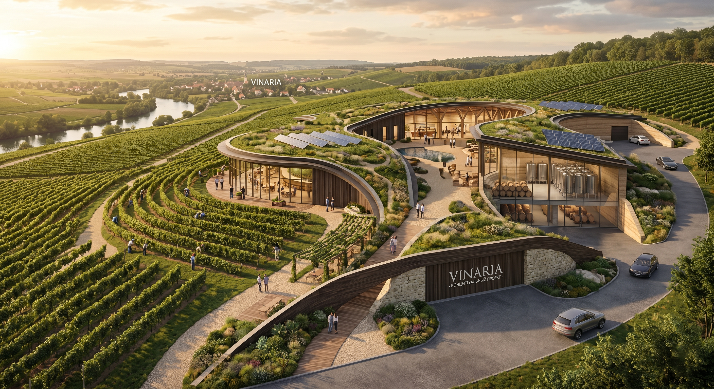
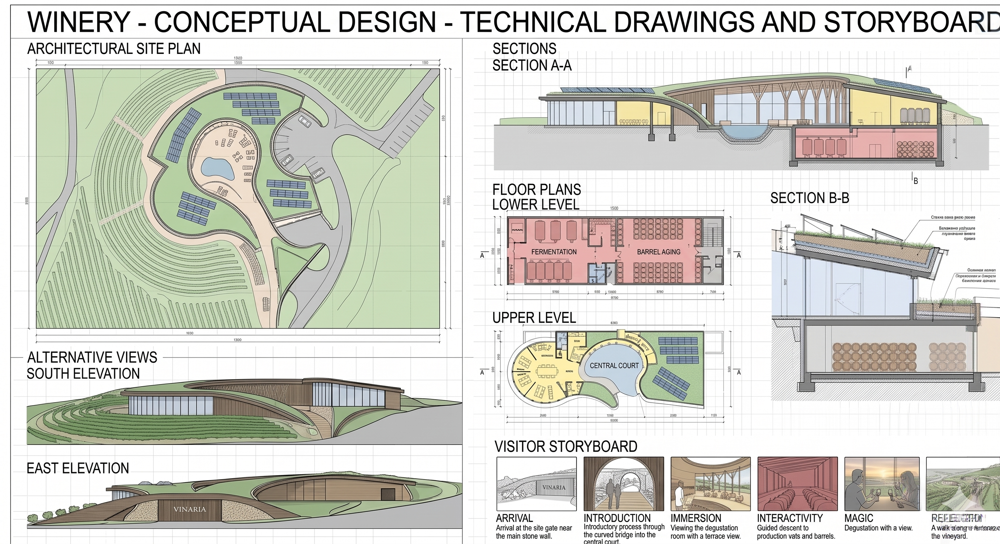

A Landscape-Integrated Winery Concept
Vinarija
A winery where the building becomes part of the hill, and tasting becomes a journey through landscape, production and view.
01 / Concept statement
Not an object placed on nature, but an extension of the vineyard slope.
Vinarija is shaped as part of the hill, the vineyard and the visitor route. The building's flowing lines echo the vineyard terraces, green roofs dissolve the volume into the terrain, and glass facades open the production process to the valley panorama.
02 / Architecture as landscape
Architecture works as terrain, route and atmosphere.
These six principles turn the winery into a coherent landscape object, rather than a set of separate rooms.
Embedded in Terrain
The volume is partially embedded and visually continues the line of the hill.
Green Roofs
Roofs become a fifth facade, a planted surface and a thermal layer.
Curved Organic Geometry
Soft contours echo vineyard terraces, paths and the pattern of the vines.
Glass Facades
Transparency connects interiors with production, the court and the valley.
Wood and Stone
Materials create a sense of craft, earth and warm premium tactility.
Central Water Court
The water court gathers routes and creates an emotional pause.

Visitor journey
03 / Visitor journey
Arrival
The visitor enters the vineyard valley and sees not a standalone building, but a soft line of hill, stone, wood and planting.
Introduction through landscape
A flowing path leads toward the central court. The space reveals itself gradually, like an architectural stage.
Immersion
The guest sees production, tanks, barrels and process. Wine becomes not an abstract product, but a visible transformation.
Interaction with the process
The route can include guided contact with fermentation, aging, barrels, aromas and the material language of the winery.
Tasting with a view
A panoramic tasting space connects the flavor of wine with earth, water, sun and horizon.
Return to the vineyard
A final walk across terraces and planted roofs reinforces the feeling that Vinarija is not only a building, but a place.
04 / Production and experience
Technology is not hidden. It becomes part of the experience.
The lower level is dedicated to fermentation, barrel aging and storage. The upper level opens to guests through tasting, a view terrace, restaurant potential and intimate events.
fermentation
barrel aging
storage
tasting
05 / Sustainability
Sustainability is not decoration. It is the logic of the building's placement.
Environmental strategies support both the image and the operation of the winery, from energy to the microclimate of production spaces.
on-site energy generation potential
insulation, water retention and visual integration
stable microclimate for the lower level
irrigation potential for landscape and roof planting
stone, wood, gravel and regional planting
clear division of guest journey and technical logistics
06 / Technical drawings and storyboard
Site plan as storyboard.
The technical board presents the project as a system: upper guest level, lower production, water court, arrival, parking, green roofs and solar panels.
The central water court gathers routes and creates a calm pause before tasting.

07 / Development potential
Earth. Vine. Architecture. Wine.
Vinarija can develop as a winery, a gastronomic venue, an architectural route, a place for intimate events and a strong visual brand for the region.
Wine tourism
Gastronomy
Events
Architecture destination
Regional branding